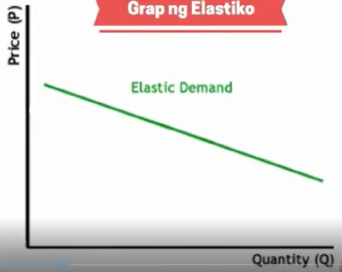
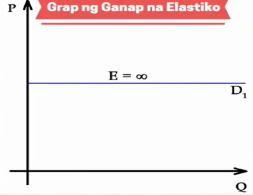
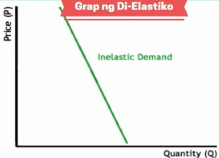
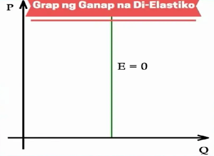
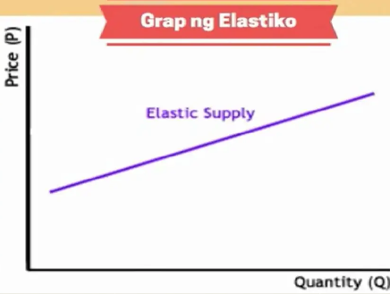
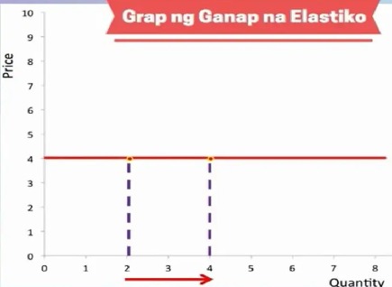
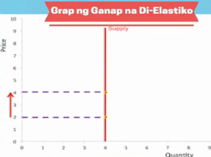
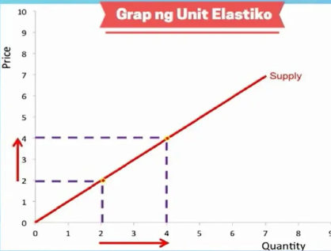

Elastisidad ng Demand
Ang elastisidad ay tumutukoy sa antas ng pagtugon ng bawat mamimili sa pagbabago ng presyo.
Uri ng Elastisidad ng Demand
- Elastiko: Koepisyente ay >1. Sa bawat 1% na pagbabago sa presyo, higit sa 1% ang pagbabago sa dami ng demand.

- Ganap na Elastiko: Koepisyente = Infinite. Handang bumili ang mamimili ng iba't ibang dami ng demand sa iisang presyo.

- Di-Elastiko: Koepisyente ay <1. Hindi maaaring bawasan ng malaki ng mamimili ang dami ng demand kumpara sa pagtaas ng presyo.

- Ganap na Di-Elastiko: Koepisyente = 0. Handang bumili ang mamimili ng nakatakdang dami ng demand anuman ang presyo.

- Unit Elastik: Koepisyente = 1. Kayang pantayan ng mamimili ang dami ng demand sa anumang pagbabago ng presyo.

Elastisidad ng Supply
Ang elastisidad ng supply ay tumutukoy sa pagbabago sa bahagdang dami ng suplay ayon sa pagbabago ng presyo.
Uri ng Elastisidad ng Supply
- Elastiko: Koepisyente ay >1. Sa bawat 1% na pagbabago sa presyo, higit sa 1% ang pagbabago sa dami ng supply.

- Ganap na Elastiko: Koepisyente = Infinite. Handang magtinda ang prodyuser ng iba't ibang dami ng supply sa iisang takdang presyo.

- Di-Elastiko: Koepisyente ay <1. Hindi maaaring bawasan ng malaki ng prodyuser ang dami ng supply kumpara sa pagtaas ng presyo.

- Ganap na Di-Elastiko: Koepisyente = 0. Walang kakayahang magdagdag o maglaki ng dami ng suplay kumpara sa porsyento ng pagtaas ng presyo.

- Unit Elastik: Koepisyente = 1. Kayang pantayan ng prodyuser ang dami ng supply sa anumang pagbabago ng presyo.
